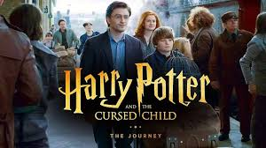

About the Author
Joanne Rowling, known by her pen name J. K. Rowling, is a British author and philanthropist. She is the author of Harry Potter, a seven-volume fantasy novel series published from 1997 to 2007. The series has sold over 600 million copies, been translated into 84 languages, and spawned a global media franchise including films and video games.

About the Book
Harry Potter and the Cursed Child opens with Harry Potter, now an adult and a Ministry of Magic official, sending his youngest son, Albus Severus Potter, off to Hogwarts. Albus struggles to live up to his family’s expectations and the pressure of being Harry Potter's son, feeling isolated and misunderstood. He befriends Scorpius Malfoy, the son of Draco Malfoy, who carries his own burden of rumors about his lineage.
The story takes a twist when Albus and Scorpius discover a hidden Time-Turner. They decide to go back in time to save Cedric Diggory, a victim of Voldemort, believing that this would be a noble way to prove themselves. However, their actions lead to unintended consequences, creating alternate timelines with significant changes to the lives of Harry, Hermione, Ron, and others. In one timeline, Voldemort wins the Battle of Hogwarts, drastically altering the world for the worse.
As the two boys struggle to fix the damage they've caused, Harry and his friends must come to terms with the realities of parenthood and legacy, as well as the difficult choices they've made in their lives. With themes of friendship, family bonds, and the lasting impact of our choices, the play combines adventure with a poignant exploration of identity and acceptance.
